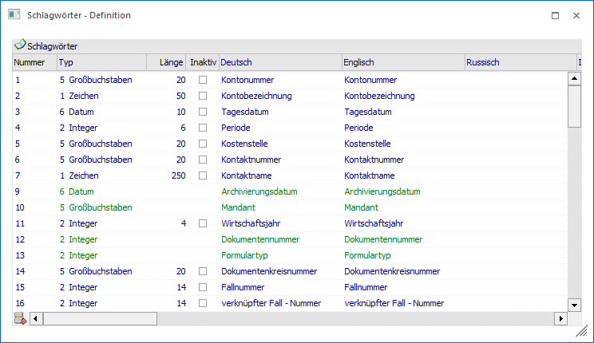
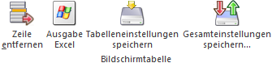
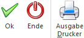

Voraussetzung, dass archivierte Dokumente schnell wiedergefunden werden können, ist, dass Archiveinträge eine Beschlagwortung aufweisen. Anhand dieser Zuordnungen (Schlagwörter mit Inhalt) kann gezielt nach Archiveinträgen gesucht werden. Im Menüpunkt
1 WinLine ADMIN
1 Archiv
1 Beschlagwortung
1 Schlagwörter
erfolgt hierfür die Anlage der Schlagwörter, d.h. jener Elemente, welche in der weiteren Folge pro Archiveintrag mit Inhalt gefüllt werden können.

In der Tabelle werden alle existierenden Schlagwörter angezeigt, wobei die ersten 100 Nummern bereits vordefiniert bzw. von Seiten WinLine reserviert sind. Die Schlagwörter in grüner Schrift sind hierbei fix und können nicht editiert werden (rein informativ).
Zur Definition neuer Begriffe wird in der Tabelle die nächste freie Zeile angewählt und dass selbst kreierte Schlagwort hinterlegt. Hierfür stehen die folgenden Felder zur Verfügung:
Ø Nummer
Die Nummer wird, beginnend mit 101, automatisch vergeben und entsprechend hochgezählt.
Ø Typ
Aus der Auswahllistbox kann der Typ des Datenfeldes bestimmt werden, in welches das Schlagwort eingegeben werden soll.
ü 1 - Zeichen
Es können Texte als
Schlagwort hinterlegt werden.
ü 2 - Integer
Es können ganze
Zahlen (max. 5stellig) hinterlegt werden.
ü 4 - Double
Es können
Fließkommazahlen (z.B. mit 9 Vorkommazahlen und 2 Nachkommazahlen) als
Schlagwort hinterlegt werden.
ü 5 - Großbuchstaben
Texte werden
in Großbuchstaben konvertiert.
ü 6 - Datum
Es kann ein Datum als
Schlagwort hinterlegt werden.
ü 7 - Eigenschaften
Wird der Typ
"Eigenschaften" vergeben, dann kann im Feld "Länge" aus einer Auswahllistbox
eine der bereits angelegten Eigenschaften (die Anlage findet im Programm
"WinLine START" im Menüpunkt "Optionen" - "Eigenschaften" statt) ausgewählt
werden.
Dadurch kann bei der Beschlagwortung aus einem Wertevorrat der
Eigenschaft ein Wert als Schlagwort ausgewählt werden.
Ø Länge
Im Feld "Länge" kann die Anzahl der Zeichen eingetragen werden, die das Feld haben soll. Wird der Typ "7 - Eigenschaft" verwendet, kann hier eine Eigenschaft ausgewählt werden.
Ø Inaktiv
Durch Aktivierung der Checkbox "inaktiv" (diese ist nur bei den Definitionen 1-100 möglich) wird definiert, dass die entsprechende Beschlagwortung nicht mehr verwendbar ist.
Im Menüpunkt "Neuer Archiveintrag", sowie den Archivsuchen, stehen die inaktiven Schlagwörter in der Auswahl nicht mehr zur Verfügung. Im letzteren auch nicht in der Tabelle der Schlagwörter zu bereits bestehenden Archiveinträgen.
Hinweis
Wurden Beschlagwortungen, die auf inaktiv gesetzt werden, bereits verwendet, dann werden diese trotzdem in der Tabelle der Schlagwörter zu bestehenden Archiveinträgen angezeigt und können auch weiter verwendet/bearbeitet werden.
Beispiel
Wird die Beschlagwortung "Tagesdatum" auf "inaktiv" gesetzt, dann erhält man im Menüpunkt "Neuer Archiveintrag" trotzdem nach wie vor das Tagesdatum sofort als erstes Schlagwort vorgeschlagen.
Wenn man manuell versucht dieses Schlagwort auszuwählen, wird man feststellen, dass dieses in der Auswahl nicht enthalten ist (da auf "inaktiv"). Ebenso bei gespeicherten Archiveinträgen.
Wurde das Tagesdatum bei einem bestehenden Dokument beschlagwortet, dann gibt es dieses Schlagwort nach wie vor (und kann auch als solches bearbeitet werden). Nur bei neuen Schlagwörtern ist der Eintrag in der Auswahl nicht mehr vorhanden!
Ø Bezeichnung
In den nächsten 20 Spalten kann die Bezeichnung der Beschlagwortung in allen verfügbaren Sprachen hinterlegt werden. Es wird immer die Sprache angezeigt, mit welcher das Programm gestartet wird.
Hinweis
Der Schlagwort-Inhalt (d.h. die Beschlagwortung) ist immer nur 1-sprachig! D.h. wird z.B. eine Faktura analysiert, so bleibt das Schlagwort immer in jener Sprache, in welcher der Beleg erfasst und archiviert wurde.
Tabellenbuttons

Ø Zeile entfernen
Durch Anklicken des Entfernen-Buttons können angelegte Definitionen (Nummer > 100) wieder gelöscht werden. Dabei prüft das Programm automatisch bei allen eingetragenen Mandanten, ob das betreffende Schlagwort im Archiv bereits verwendet worden ist. Ist dies der Fall, bekommt man pro Mandant eine Sicherheitsabfrage, ob diese Schlagwörter gelöscht werden sollen. Erst wenn bei allen Mandanten diese Schlagwörter gelöscht wurden, kann auch die Definition (nach einer erneuten Sicherheitsabfrage) gelöscht werden.
Ø Ausgabe Excel
Durch Anwahl des Buttons "Ausgabe Excel" wird der Inhalt der Tabelle an Microsoft Excel übergeben.
Ø Tabelleneinstellungen speichern
Die Spalten einer Tabelle können grundsätzlich an beliebige Positionen verschoben, bzw. in der Breite entsprechend angepasst werden. Durch Anwahl des Buttons "Tabelleneinstellungen speichern" werden die Einstellungen benutzerspezifisch gespeichert und bei dem nächsten Aufruf des Programmpunktes wieder vorgeschlagen.
Ø Gesamteinstellungen speichern
Im Gegensatz zu "Tabelleneinstellungen speichern" können mit "Gesamteinstellungen speichern" mehrere Tabellenaufbauten gespeichert und nach Wunsch geladen werden.
Buttons

Ø Ok
Wurden alle gewünschten Beschlagwortungen erfasst, so können die Eingaben mit Drücken des Buttons "Ok" bzw. der Taste F5 gespeichert werden.
Ø Ende
Durch Drücken des Buttons "Ende" oder der ESC-Taste kann der Programmteil ohne speichern verlassen werden.
Ø Ausgabe Drucken
Durch Anklicken des Buttons "Ausgabe Drucker" wird die Liste der Beschlagwortungen auf den eingestellten Drucker gedruckt.